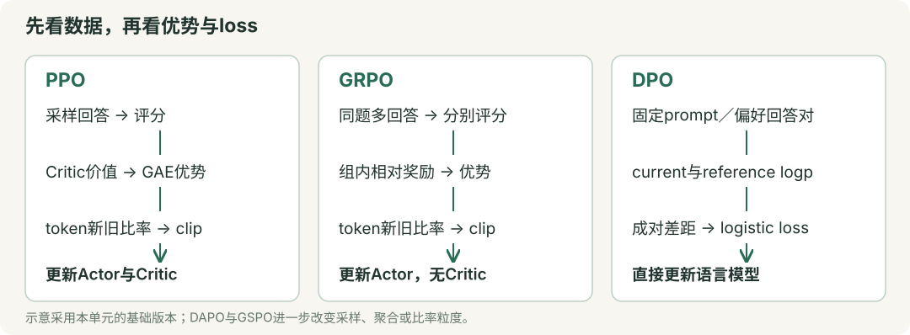

单元8 · 强化学习与偏好优化算法
本单元把PPO、GRPO、DAPO、GSPO与DPO串起来：先弄清“奖励如何变成更新信号”，再区分概率比值、裁剪、KL和loss聚合。公式均使用自然对数；带帽子的量表示估计值，计算题给定的标准差口径、mask和聚合方式以题设为准。

1. 语言模型怎样成为一个策略？
① 状态、动作与三种概率
在文本生成中，状态 是prompt 加上已经生成的前缀；动作 是下一个token。策略 就是语言模型给这个token的条件概率， 是可训练参数。
| 记号 | 含义 | 后面用在哪里 |
|---|---|---|
| 当前正在更新的策略 | 计算当前log-prob和梯度 | |
| 采集这一批rollout时的策略 | PPO／GRPO的重要性比率分母 | |
| 作为参照的策略，通常在一个训练阶段内冻结 | reference KL或DPO参考分数 |
rollout是一次采样得到的回答／轨迹。一次更新期间，old与reference可以起初参数相同，但职责不同；old会随下一轮采样刷新，reference按训练方案固定或阶段性刷新。
② 从logits到整条回答的log-prob
设词表大小为 ，当前位置第 个token的logit为 ：
减去同一个最大logit不改变概率，可避免指数溢出。实现中通常直接用 log_softmax，再取实际生成或给定的那个token的值。
例： logits为 ，概率为 ；若给定token是第二个，它的log-prob为 。
自回归回答的条件概率是逐token概率的乘积，因此log-prob是和：
例如两个response token的概率为 ，回答概率为 ，log-prob为 。prompt参与条件上下文，但本单元的回答loss只统计有效response token，排除prompt与padding；实现时还要将预测位置与目标token正确错位对齐。
依据：策略与log-prob基础。Softmax可回看单元4。
2. Reward、Return与Advantage为什么要分开？
① 即时奖励与累计回报
是执行当前动作后的即时奖励； 是未来奖励的折扣系数。从当前步算起的采样回报为：
例： 剩余奖励为 ，，则 ，既不是当前奖励1，也不是不折扣的总和7。LLM的终局评分可以只在最后一个有效token处给出；KL等奖励塑形也可分布在中间步骤。
读完这个知识点，接着练： 第8-03题
② Advantage：比这个状态的通常表现好多少？
以下价值都针对同一策略： 是从状态 出发按策略继续行动的期望回报； 是先选择动作 、之后再按策略行动的期望回报。
例： 状态本来就容易取得8分，某动作的预期回报是10分，优势为2；另一个动作得到6分，优势为−2。用采样回报时， 是一个估计，不能把一次结果直接当成精确的 。
策略梯度可用回报加权；采用状态baseline通常为了降低采样方差。给定 ，动作按该策略采样、baseline 不依赖当前动作且作为固定权重时：
所以减去这样的baseline不会改变这一项的期望梯度。并非“必须用Advantage才能训练”；REINFORCE也能直接用回报。对固定样本的策略更新贡献，正优势鼓励提高该动作概率，负优势鼓励降低；参数共享及其他loss意味着每步不保证所有样本都如愿变化。
依据：策略梯度与baseline。
3. TD error与GAE：优势是怎样算出来的？
① TD error：用一步真实奖励加后续预测
Critic 是预测状态价值的模型， 是它的参数。对非终止转移，一步TD error为：
指采样时保存的价值预测。前两项是一步bootstrap target，减去原预测得到误差；也可把它视为一步Advantage估计。
例： ，则 。
真正终止时，后续价值置0。 若当前预测5、终止奖励2，则误差是 。仅因时间／长度上限截断是否bootstrap要按任务定义处理，不能把所有截断都等同于环境终止；分段rollout还需在边界处停止跨段递推。
读完这个知识点，接着练： 第8-06题
② GAE：从后往前累加TD error
GAE（广义优势估计）用 控制未来TD error的衰减。在一条正常终止的轨迹内：
展开为 。 控制未来奖励折扣， 控制估计中多步信息的混合，二者不是同一个旋钮。
手算： 已算好 ，。先算末步 ，再算 。
| 取值 | 结果 | 依赖与取舍 |
|---|---|---|
| 一步bootstrap，更依赖价值预测 | ||
| 且正常终止、末状态价值为0 | 中间价值项抵消，得到MC形式 | |
| 混合多步估计 | 常用于偏差与方差的折中，非无条件保证 |
例如两步展开：。正常终止才去掉最后的bootstrap项。
Critic的固定监督目标常取 。先用未标准化的GAE构造target，再按需标准化给Actor使用的优势。 例如旧价值2、原始GAE为3，则target为5；即使Actor优势被标准化为1，target仍为5。
依据：GAE原论文。
读完这个知识点，接着练： 第8-07题 · 第8-08题 · 第8-09题
4. PPO：为什么有old policy和clip？
① 新旧概率比：同一个已采样动作变化了多少？
分子分母用同一个状态、同一个动作。old概率在这批数据更新期间固定，当前概率每次重新计算；不需要始终在显存里另放一个old模型，保存old log-prob即可满足这部分计算。
例： old概率0.20、当前0.24，，相对提高20%；若old log-prob为−1.5、当前为−1.3，则 。不要相除两个log-prob。
重要性比率用于管理行为策略与当前策略的差异。PPO通常归为on-policy算法，使用近期采样并做有限轮更新；有这个比率不意味着可以无限重用任意旧数据，也不意味着单个token比率能完整修正整条轨迹的状态分布。
读完这个知识点，接着练： 第8-10题
② 四种情况一起看懂clip
定义要最大化的单样本代理目标 ，以及要最小化的policy loss：
是比率裁剪宽度。取 ，区间为 ：
| 优势与比率 | 原始项 | clip后的项 | 取min得到 | 含义 |
|---|---|---|---|---|
| 1.3 | 1.2 | 1.2 | 好动作继续涨的额外收益封顶 | |
| −0.6 | −0.8 | −0.8 | 差动作继续降的额外收益封顶 | |
| 0.6 | 0.8 | 0.6 | 好动作概率下降，仍需纠正 | |
| −1.3 | −1.2 | −1.3 | 差动作概率上升，仍需纠正 |
clip改变的是代理目标的激励，并不把真实概率比强行截成 ，也不保证KL小于某个常数。 一个样本的代理项饱和后，该项不再奖励继续向该方向变化；共享参数仍可能因其他样本、价值loss或正则项而变化。
依据：PPO原论文、PPO-Clip的分情况解释。
读完这个知识点，接着练： 第8-11题 · 第8-12题 · 第8-13题
5. PPO完整训练：谁学习，谁保持固定？
① Actor、Critic与一轮更新
| 角色／数据 | 职责 | 本轮minibatch更新时 |
|---|---|---|
| Actor | 给下一个token分配概率 | 更新参数 |
| Critic | 预测未来回报 | 拟合固定value target |
| Reward model或规则验证器 | 为结果提供评分 | 常固定；它不是Critic |
| old log-prob、GAE、value target | 这一批rollout的训练数据 | 固定，不反向传播 |
Reward model可能是学到的人类偏好评分器，并不等同于客观正确性检查；规则验证器则可检查答案、测试用例等。Actor和Critic可共享部分网络，角色数量不能直接当成完整模型副本数量。
一轮流程：当前策略采样 → 评分、保存old log-prob和旧价值 → 计算GAE与target → 多轮minibatch更新 → 用更新后的策略重新采样。固定数据重用若干epoch有助于样本利用，但不能永远训练同一批rollout。
简化总loss为：
分别为value loss与熵奖励系数。例：policy项 、新价值3、target5、熵0.5，取 ，则value loss为2，总loss为 。本式未包含reference KL；若KL已进入reward，再加loss项须确认不会重复惩罚。
② 熵、KL、clip fraction应该怎样读？
策略熵在每个状态对整个词表求和：。均匀二分类的熵为 ，完全确定的分布熵为0。最小化loss时，鼓励熵增加的项带负号。
| 指标 | 要观察的内容 | 不宜直接推出的结论 |
|---|---|---|
| Reward／验证集表现 | 学到目标了吗，有无利用评分漏洞 | reward涨不等于能力全面提升 |
| old／reference KL | 一轮变化／相对参照的累积偏离 | 两种KL不能混读 |
| Entropy与回答多样性 | 是否迅速变得单一 | 熵越大并非越好 |
| Clip fraction | 按实现统计多少比率越界／代理项激活裁剪 | 越界不一定落在饱和分支；低值也不单独证明没学到 |
| Value loss | Critic是否拟合target，尺度是否变化 | 低value loss不单独证明Actor更好 |
若动作确实从当前策略采样， 的期望等于熵；但从old策略采样后直接平均不是当前精确熵，且把固定采样token的负log-prob直接反传也不自动得到正确熵梯度。
依据：PPO训练流程。
读完这个知识点，接着练： 第8-16题
6. Reference KL：限制偏离的是谁？
① old与reference分别管什么？
| 对比对象 | 主要用途 | 常见设置 |
|---|---|---|
| 与 | 衡量这批rollout更新了多大一步 | old随新一轮采样刷新 |
| 与 | 相对参照保留原有行为 | reference通常在训练阶段内冻结 |
固定状态下，精确正向KL为：
它非负，交换两分布通常不同。LLM实际常用采样估计，避免每步精确遍历词表。一个采样token的 可以为负，非负性属于完整KL，不属于每个这样的样本值。
例： 当前概率 、reference ，则KL为 ；第一个动作的采样log比却为负。
RLHF常优化“期望评分 ”，其中 是惩罚强度。可把采样log比的负值乘系数加入reward；另一种实现将KL直接加在loss中，须明确所用方案。
② GRPO常见的非负单token估计
用 表示reference与当前概率的比，避免和奖励 、新旧比率 混淆：
由 ，；两概率相同才等于0。例： ，。
若动作按当前策略采样且两分布在动作空间有共同正支持，则 ，所以 。更新期间rollout来自old策略，直接平均不再自动满足这个精确无偏关系；须关注采样分布、权重和实现。这个 的分子是reference，PPO的 分子则是current。
依据：DeepSeekMath的KL项。熵与KL定义见单元3。
读完这个知识点，接着练： 第8-19题
7. GRPO：用同题多回答替代Critic基线
① 从组内奖励算优势
同一prompt采样 条回答 ，奖励为 。本节采用总体标准差和正的数值稳定项 ：
例： ，均值0.5、总体标准差0.5；忽略极小稳定项，优势为 。若用样本标准差，数值不同，计算题必须说明口径。
如果奖励全相同，分子全为0；加稳定项后优势全0。该组不给策略代理目标提供梯度，但KL或其他项仍可能更新模型；直接除以0则是实现错误。
在这里的终局奖励、outcome-supervision版本中，，同回答内有效token共享优势。它省去用于预测价值的Critic，仍需奖励来源、old概率，使用KL时还需reference信息。组内相对分数不是精确的状态价值，也不自动等于无偏的 。
② 从每个token的目标聚合为loss
每个token仍有自己的 ，按第4节计算 。令 为第 条回答的有效response长度，原始GRPO形式为：
先每条回答内部平均，再对回答平均。 reward和优势可以是回答级，比率和clip仍是token级；不要把这三个层次混为一谈。
例： 2条回答各有2个有效token。四个 为 和 ，平均分别为1.1、−0.9，组平均为0.1；若同口径平均KL为0.2、，则 ，loss为−0.08。
序列奖励能作用到token，是因为 ；这并不说明每个token的真实贡献都一样，也不意味着它们有相同的概率比率。
读完这个知识点，接着练： 第8-22题
8. DAPO：裁剪、采样和长度权重分别改了什么？
① 两种平均：必须写清分母
下面仅比较同一组逐token量 的聚合，暂不考虑不同裁剪参数或KL：
| 两条回答长度2与4 | 短回答总权重 | 长回答总权重 | 单个token权重 |
|---|---|---|---|
| 原始GRPO式先回答内平均 | 短：；长： | ||
| DAPO式全部有效token平均 | 全部为 |
手算： 短回答逐token量 ，长回答 。回答等权平均为 ；token等权平均为 。长回答的总权重增加，不能误写成两条都占 。
这是聚合权重的区别，不等于长回答一定更好；多个prompt、分布式累积时也应核对最终分母和mask。
读完这个知识点，接着练： 第8-23题
② DAPO的其他改动与适用场景
| 改动 | 做法 | 记忆要点 |
|---|---|---|
| Clip-Higher | clip区间为 ，提高上侧宽度 | 如0.2／0.28得到 ；仍非真实比率的硬限制 |
| Dynamic Sampling | 论文按组内正确率过滤全对／全错组，继续采样补足有效组 | 仅有二元正确性奖励时，这等价于排除零方差组 |
| Token级聚合 | 所有有效token共同平均 | 改的是loss reduction，不是把终局reward改成逐tokenreward |
| Overlong Reward Shaping | 处理硬截断噪声，并在上限前逐渐惩罚过长回答 | 截断不代表所有已生成推理都错误 |
以论文中的软长度惩罚规则为例， 为长度上限、 为缓冲长度：
例： ，长度80惩罚0、90惩罚−0.5、100惩罚−1。可与正确性奖励相加。论文还研究了mask硬截断样本loss的Overlong Filtering；具体哪些样本保留、如何评分，按实现配置区分。
叠加长度惩罚后，全对组也可能有不同的最终reward；按正确性筛选与按最终reward方差筛选不再等价，须区分评分与筛选配置。
原论文的数学长推理配置移除了reference KL，采用可验证结果奖励。这是特定训练设计，不能推成“所有任务都不需要KL”；也不能由没有Critic推出没有old策略。
依据：DAPO原论文§2–3。
读完这个知识点，接着练： 第8-24题 · 第8-25题 · 第8-26题
9. GSPO：把比率与clip移到回答级
① 一个回答共用一个长度归一化比率
原始GSPO对每条回答定义：
这里 是比率，别与状态 混淆。它是token比率的几何平均，不是算术平均，也不是未经长度归一化的序列概率比。
例： 两个token的比率为2和 ，序列概率比为1，；算术平均却是1.25。若3个token比率都是1.1，原始序列比为 ，归一化后仍为1.1。
读完这个知识点，接着练： 第8-27题
② 同样是group优势，更新粒度变了
原始GSPO在回答级做裁剪；原始GRPO／DAPO在token级裁剪。例如两个比率为2和 、：GRPO该回答的代理平均为 ；GSPO用 ，代理值为1。
GSPO仍通过回答内token的log-prob反向传播，并非只更新最后一个token。它以序列粒度降低某些长回答／MoE训练中的比率波动；具体稳定性依赖任务和实现，不能把论文实验结论当作所有场景保证。实际GSPO裁剪超参数也不能直接照搬上面便于手算的0.2。
依据：GSPO原论文公式5–10。
读完这个知识点，接着练： 第8-28题
10. DPO：用chosen／rejected直接学习相对偏好
① 四个log-prob怎样组成一个loss？
一条训练数据为 ： 是prompt， 是偏好的chosen回答， 是不偏好的rejected回答。标准DPO在固定偏好对上训练，不需要每步在线rollout、Critic或另训练一个显式Reward Model。
对两个给定回答分别做teacher forcing：输入prompt与回答前缀，取每个目标token的log-prob，按有效response token求和。这样得到当前模型的两个分数和reference的两个分数；不是让模型先自由生成，再看它是否刚好生成chosen。
为DPO系数； 为sigmoid。 是两个序列log概率的差，不是两个概率直接相减。原始DPO用序列log-prob之和，长度归一化属于需要另行说明的变体。
为什么会有reference？在KL正则的奖励最大化推导中，可把隐式奖励写为 。成对偏好模型采用 ，同prompt的 抵消，就得到上面的 。reference已在此损失结构中体现，无需把它误认为PPO的old策略。
手算： 当前chosen／rejected log-prob为−2／−4，reference为−3／−4，。当前gap为2，参考gap为1，所以 ，偏好概率约0.731，loss约0.313。初始当前模型与reference相同则 、loss为 ，但其梯度通常不为0。
② 更新方向、代码与reference的存储
最小实现的核心可写为：
# 四个logp均为对齐并mask后的response token log-prob之和。
# ref分数来自冻结reference的no_grad计算，或提前缓存。
current_gap = chosen_logp - rejected_logp
reference_gap = ref_chosen_logp - ref_rejected_logp
z = beta_dpo * (current_gap - reference_gap)
loss = -F.logsigmoid(z).mean()
使用 logsigmoid 可避免先sigmoid再log的数值问题。固定reference时：
因此目标鼓励扩大chosen相对rejected的log概率差；并不保证chosen的绝对概率每步都上升。例如chosen概率从0.4降至0.3，rejected从0.2降至0.1，相对比值仍从2增至3。多个样本的梯度也可能互相影响。
是偏好损失构造的概率，不是给语言模型新加一个“选A／B”的分类输出头；训练后的模型仍生成token。DPO与SFT的区别是前者比较偏好对及reference，后者通常只对目标回答做负log似然。
标准DPO需要reference评分信息，不必无条件常驻第二份完整模型：固定数据、固定reference及相同分词／截断／mask方案下可预计算并缓存参考log-prob；也有适配器共享底座的实现。reference不跟随当前模型每步更新，否则目标改变。 来自KL正则推导，也影响梯度尺度，不能简单视为“越大就总是学得越快”。
依据：DPO原论文§4及附录、TRL的reference预计算与训练选项。
11. 一张表把算法关系串起来
| 方法 | 数据与评分 | 优势来源 | 比率／裁剪 | 关键训练结构 |
|---|---|---|---|---|
| PPO（本单元Actor–Critic版本） | 近期在线rollout＋reward | Critic＋GAE | token级current／old | Actor与Critic更新，固定本批旧量 |
| GRPO（原始终局监督版本） | 同prompt多条rollout＋reward | 组内相对奖励 | token级current／old | 无Critic，先回答内平均再组平均，原式含reference KL |
| DAPO（论文配置） | 同题分组rollout＋可验证奖励 | 组内相对奖励 | token级，非对称clip | token等权聚合、动态采样、长度塑形，移除reference KL |
| GSPO（原始版本） | 同题分组rollout＋reward | 组内相对奖励 | 长度归一化sequence比率 | 整条回答裁剪，仍通过token log-prob更新 |
| DPO（标准离线版本） | 固定prompt／chosen／rejected | 不算GAE／组优势 | current与reference的成对log差 | logistic偏好loss，直接更新语言模型 |
答题先辨认四件事：数据来自rollout还是固定偏好对？优势从哪里来？比率比较的是old还是reference？最后按token还是回答平均？ 再代数字，避免只凭算法名套公式。
公开考点回忆可提供练习方向：牛客上的GAE与PPO／GRPO／DPO问答线索、牛客上的DAPO／GSPO比较线索。它们不构成考频统计，技术定义以上述原论文和官方文档为准；本单元例题与选择题均为重新编写的教学练习。
配套练习 · 32题
先答题，再看逐项解析；多选须全部选对。可筛选错题、记录把握程度并导出答题记录。
某回答有2个有效response token，其条件概率分别为1/2、1/4。按序列log-prob求和，结果约为多少？
无脚本阅读：查看答案与解析
正确答案：B- A错误：概率不应直接相加取负。
- B正确：回答概率为(1/2)×(1/4)=1/8，log-prob=log(1/8)=−log8≈−2.079。
- C错误：这是两个token log-prob的平均值；题设要求求和。
- D错误：0.125是回答概率，不是它的对数。
- A错误：概率不应直接相加取负。
- B正确：回答概率为(1/2)×(1/4)=1/8，log-prob=log(1/8)=−log8≈−2.079。
- C错误：这是两个token log-prob的平均值；题设要求求和。
- D错误：0.125是回答概率，不是它的对数。
在本单元的LLM回答训练设置中，哪些描述正确？
无脚本阅读：查看答案与解析
正确答案：ACD- A正确：当前状态决定下一个token的分布。
- B错误：本设置只对有效response token计loss及聚合分母，prompt仍是条件上下文。
- C正确：评分给定回答不要求模型重新自由采样出相同文本。
- D正确：需要目标token的条件log概率，不是所有词表log概率直接求和。
- A正确：当前状态决定下一个token的分布。
- B错误：本设置只对有效response token计loss及聚合分母，prompt仍是条件上下文。
- C正确：评分给定回答不要求模型重新自由采样出相同文本。
- D正确：需要目标token的条件log概率，不是所有词表log概率直接求和。
从当前步到正常终止的奖励依次为(1,2,4)，折扣γ=0.5。当前采样回报G_t是多少？
无脚本阅读：查看答案与解析
正确答案：C- A错误：1只是即时奖励。
- B错误：7是未折扣之和。
- C正确：G_t=1+0.5×2+0.5²×4=3。
- D错误：各步折扣依次为1、γ、γ²，按此计算是3。
- A错误：1只是即时奖励。
- B错误：7是未折扣之和。
- C正确：G_t=1+0.5×2+0.5²×4=3。
- D错误：各步折扣依次为1、γ、γ²，按此计算是3。
同一策略在状态s的V(s)=8，两个动作的Q分别为10与6。它们的精确Advantage分别是多少？
无脚本阅读：查看答案与解析
正确答案：A- A正确：A(s,a)=Q(s,a)−V(s)，分别为10−8与6−8。
- B错误：Q不是Advantage，还应减去状态价值。
- C错误：定义采用相减而非相加。
- D错误：减法方向应为Q−V。
- A正确：A(s,a)=Q(s,a)−V(s)，分别为10−8与6−8。
- B错误：Q不是Advantage，还应减去状态价值。
- C错误：定义采用相减而非相加。
- D错误：减法方向应为Q−V。
关于策略梯度中的baseline，哪些说法正确？
无脚本阅读：查看答案与解析
正确答案：BC- A错误：可以直接用回报；baseline不是策略梯度能工作的必要条件。
- B正确：E[b(s)∇logπ]=b(s)∇Σ_aπ(a|s)=0，在给定条件下成立。
- C正确：合适的baseline能降低方差，价值函数是常用选择。
- D错误：Q是条件期望，一次采样只是估计。
- A错误：可以直接用回报；baseline不是策略梯度能工作的必要条件。
- B正确：E[b(s)∇logπ]=b(s)∇Σ_aπ(a|s)=0，在给定条件下成立。
- C正确：合适的baseline能降低方差，价值函数是常用选择。
- D错误：Q是条件期望，一次采样只是估计。
当前旧价值V_old(s_t)=5，即时奖励2，γ=0.9。若这一步是任务真正终止，即使模型对终止后状态输出6，TD error应是多少？
无脚本阅读：查看答案与解析
正确答案：B- A错误：2+0.9×6−5=2.4用于非终止且应bootstrap的转移。
- B正确：真正终止的后续价值取0，δ=2+0−5=−3。
- C错误：终止mask去掉整个后续价值项，结果是−3。
- D错误：没有正确减去当前价值并处理终止。
- A错误：2+0.9×6−5=2.4用于非终止且应bootstrap的转移。
- B正确：真正终止的后续价值取0，δ=2+0−5=−3。
- C错误：终止mask去掉整个后续价值项，结果是−3。
- D错误：没有正确减去当前价值并处理终止。
两步正常终止轨迹的TD error为δ₀=1、δ₁=2，γ=0.9、λ=0.5。GAE (A₀,A₁)是多少？
无脚本阅读：查看答案与解析
正确答案：C- A错误：未来TD error需乘γλ=0.45。
- B错误：λ不为0，第一步还应累积未来误差。
- C正确：先A₁=2，再A₀=1+0.9×0.5×2=1.9。
- D错误：2.8只乘γ，漏掉λ。
- A错误：未来TD error需乘γλ=0.45。
- B错误：λ不为0，第一步还应累积未来误差。
- C正确：先A₁=2，再A₀=1+0.9×0.5×2=1.9。
- D错误：2.8只乘γ，漏掉λ。
关于GAE的两个参数与边界，哪些说法正确？
无脚本阅读：查看答案与解析
正确答案：ACD- A正确：此时递推中的未来项系数γλ为0。
- B错误：截断末端可能需要bootstrap，不能一律丢弃。
- C正确：将TD error加权展开，中间价值项抵消。
- D正确：两者同时出现在GAE权重中，但定义与作用不同。
- A正确：此时递推中的未来项系数γλ为0。
- B错误：截断末端可能需要bootstrap，不能一律丢弃。
- C正确：将TD error加权展开，中间价值项抵消。
- D正确：两者同时出现在GAE权重中，但定义与作用不同。
采样时旧价值为2，未标准化GAE为3；Actor所用优势后来被标准化为1。按本单元方法，固定value target是多少？
无脚本阅读：查看答案与解析
正确答案：D- A错误：标准化后的Actor优势不是value target。
- B错误：原始GAE还需加回旧价值。
- C错误：不能把两个GAE版本混用相加。
- D正确：先用原始GAE构造R_hat=3+2=5；Actor后续标准化不改变这个固定目标。
- A错误：标准化后的Actor优势不是value target。
- B错误：原始GAE还需加回旧价值。
- C错误：不能把两个GAE版本混用相加。
- D正确：先用原始GAE构造R_hat=3+2=5；Actor后续标准化不改变这个固定目标。
同一token的old log-prob为−1.5，current log-prob为−1.3。PPO比率ρ约为多少？
无脚本阅读：查看答案与解析
正确答案：B- A错误：不能相除两个log-prob。
- B正确：ρ=exp(−1.3−(−1.5))=exp(0.2)≈1.221。
- C错误：0.2是log比率，还需取指数且符号为正。
- D错误：0.819≈exp(−0.2)，把分子分母颠倒了。
- A错误：不能相除两个log-prob。
- B正确：ρ=exp(−1.3−(−1.5))=exp(0.2)≈1.221。
- C错误：0.2是log比率，还需取指数且符号为正。
- D错误：0.819≈exp(−0.2)，把分子分母颠倒了。
PPO中A=2、ρ=1.4、ε=0.2。S=min(ρA,clip(ρ)A)，policy loss=−S。二者分别是多少？
无脚本阅读：查看答案与解析
正确答案：C- A错误：原始项2.8与裁剪项2.4取较小的2.4。
- B错误：clip后的比率1.2还需乘A=2。
- C正确：clip(1.4)=1.2，S=min(2.8,2.4)=2.4，loss取负。
- D错误：正优势对应此处S为正，loss为负。
- A错误：原始项2.8与裁剪项2.4取较小的2.4。
- B错误：clip后的比率1.2还需乘A=2。
- C正确：clip(1.4)=1.2，S=min(2.8,2.4)=2.4，loss取负。
- D错误：正优势对应此处S为正，loss为负。
PPO中A=−2、ρ=0.6、ε=0.2。S与policy loss=−S分别是多少？
无脚本阅读：查看答案与解析
正确答案：A- A正确：原始项−1.2，裁剪项0.8×(−2)=−1.6，min为−1.6。
- B错误：负数比较不能取绝对值较小的项；−1.6更小。
- C错误：优势为负，两候选S项均为负。
- D错误：漏乘了优势幅度2。
- A正确：原始项−1.2，裁剪项0.8×(−2)=−1.6，min为−1.6。
- B错误：负数比较不能取绝对值较小的项；−1.6更小。
- C错误：优势为负，两候选S项均为负。
- D错误：漏乘了优势幅度2。
关于PPO-Clip，哪些判断正确？
无脚本阅读：查看答案与解析
正确答案：BCD- A错误：clip改变目标的激励，真实比率仍可能越界。
- B正确：例如A=1、ρ=0.6时min(0.6,0.8)=0.6。
- C正确：例如A=−1、ρ=1.3时min(−1.3,−1.2)=−1.3。
- D正确：多个样本、共享参数和其他loss都可能继续改变策略分布。
- A错误：clip改变目标的激励，真实比率仍可能越界。
- B正确：例如A=1、ρ=0.6时min(0.6,0.8)=0.6。
- C正确：例如A=−1、ρ=1.3时min(−1.3,−1.2)=−1.3。
- D正确：多个样本、共享参数和其他loss都可能继续改变策略分布。
本单元的一轮PPO训练中，哪些做法合理？
无脚本阅读：查看答案与解析
正确答案：AC- A正确：分母和权重固定，当前策略随着minibatch更新而变化。
- B错误：Reward Model负责评价结果／偏好，Critic负责预测状态未来回报，职责不同。
- C正确：这是本单元Actor–Critic版本的两部分学习任务。
- D错误：PPO使用近期rollout做有限轮更新，之后应重新采样。
- A正确：分母和权重固定，当前策略随着minibatch更新而变化。
- B错误：Reward Model负责评价结果／偏好，Critic负责预测状态未来回报，职责不同。
- C正确：这是本单元Actor–Critic版本的两部分学习任务。
- D错误：PPO使用近期rollout做有限轮更新，之后应重新采样。
给定PPO代理项S=1.2、新价值3、固定target5、熵H=0.5，c_v=0.5、c_e=0.1。用L=−S+c_v×(V−target)²/2−c_eH，总loss是多少？
无脚本阅读：查看答案与解析
正确答案：D- A错误：漏掉value loss。
- B错误：value项为0.5×(4/2)=1，不是2。
- C错误：熵奖励在最小化loss里取负号，正确总和为−0.25。
- D正确：value loss=(3−5)²/2=2，L=−1.2+1−0.05=−0.25。
- A错误：漏掉value loss。
- B错误：value项为0.5×(4/2)=1，不是2。
- C错误：熵奖励在最小化loss里取负号，正确总和为−0.25。
- D正确：value loss=(3−5)²/2=2，L=−1.2+1−0.05=−0.25。
关于熵与训练监控，哪些说法正确？
无脚本阅读：查看答案与解析
正确答案：ABD- A正确：它描述整个动作分布的不确定性。
- B正确：负号使最小化loss倾向提高熵，但权重须按任务选择。
- C错误：采样分布与梯度处理都需检查，这不是自动成立的等价。
- D正确：还需结合reward、KL、熵、采样与学习率等信息。
- A正确：它描述整个动作分布的不确定性。
- B正确：负号使最小化loss倾向提高熵，但权重须按任务选择。
- C错误：采样分布与梯度处理都需检查，这不是自动成立的等价。
- D正确：还需结合reward、KL、熵、采样与学习率等信息。
固定状态下current=(1/2,1/2)，reference=(3/4,1/4)。精确KL(current∥reference)约为多少？
无脚本阅读：查看答案与解析
正确答案：C- A错误：这是第一个动作的log比，不是完整KL。
- B错误：两个分布不同，KL不为0。
- C正确：KL=0.5 log(2/3)+0.5 log2=0.5 log(4/3)≈0.144。
- D错误：log2只对应第二个动作的log比。
- A错误：这是第一个动作的log比，不是完整KL。
- B错误：两个分布不同，KL不为0。
- C正确：KL=0.5 log(2/3)+0.5 log2=0.5 log(4/3)≈0.144。
- D错误：log2只对应第二个动作的log比。
old policy与reference policy有哪些区别？
无脚本阅读：查看答案与解析
正确答案：ACD- A正确：PPO比率分母需要采样时的概率。
- B错误：标准参照约束通常在训练阶段内固定reference，并非每步追随Actor。
- C正确：角色不同，不能因为初始化相同就混用。
- D正确：完整KL非负不意味着每个单独的log比都非负。
- A正确：PPO比率分母需要采样时的概率。
- B错误：标准参照约束通常在训练阶段内固定reference，并非每步追随Actor。
- C正确：角色不同，不能因为初始化相同就混用。
- D正确：完整KL非负不意味着每个单独的log比都非负。
GRPO常见KL样本量为k_hat=u−logu−1，其中u=π_ref/π_current。若u=2，结果约为多少？
无脚本阅读：查看答案与解析
正确答案：D- A错误：log2只是其中一项。
- B错误：由logu≤u−1，此样本量非负。
- C错误：公式是u−logu−1，不能把log项改成加号。
- D正确：2−log2−1=1−log2≈0.307。
- A错误：log2只是其中一项。
- B错误：由logu≤u−1，此样本量非负。
- C错误：公式是u−logu−1，不能把log项改成加号。
- D正确：2−log2−1=1−log2≈0.307。
同一prompt的4条回答奖励为(1,1,0,0)。用总体标准差并忽略极小稳定项，GRPO优势是多少？
无脚本阅读：查看答案与解析
正确答案：A- A正确：均值0.5，方差0.25，标准差0.5；中心化后再除以0.5。
- B错误：只做了减均值，漏除标准差。
- C错误：原始reward还需中心化与缩放。
- D错误：总体标准差为0.5，不是0.25；0.25是方差。
- A正确：均值0.5，方差0.25，标准差0.5；中心化后再除以0.5。
- B错误：只做了减均值，漏除标准差。
- C错误：原始reward还需中心化与缩放。
- D错误：总体标准差为0.5，不是0.25；0.25是方差。
关于原始终局监督GRPO，哪些说法正确？
无脚本阅读：查看答案与解析
正确答案：AC- A正确：奖励、优势、比率是不同层次。
- B错误：组内优势需要reward，新旧比率需要old概率。
- C正确：策略代理项为0不意味着所有正则梯度也为0。
- D错误：组内相对统计并非精确Q−V，也无此无条件保证。
- A正确：奖励、优势、比率是不同层次。
- B错误：组内优势需要reward，新旧比率需要old概率。
- C正确：策略代理项为0不意味着所有正则梯度也为0。
- D错误：组内相对统计并非精确Q−V，也无此无条件保证。
2条等长回答的平均代理项分别为1.1、−0.9；同口径平均KL为0.2，β_KL=0.1。J=平均代理项−β_KL×KL，最小化的L=−J为多少？
无脚本阅读：查看答案与解析
正确答案：B- A错误：0.08是要最大化的J，loss需取负。
- B正确：代理均值=(1.1−0.9)/2=0.1，J=0.1−0.02=0.08，L=−0.08。
- C错误：KL是从J扣除，不是加到J。
- D错误：漏掉KL且未正确取负。
- A错误：0.08是要最大化的J，loss需取负。
- B正确：代理均值=(1.1−0.9)/2=0.1，J=0.1−0.02=0.08，L=−0.08。
- C错误：KL是从J扣除，不是加到J。
- D错误：漏掉KL且未正确取负。
两条回答长度为2与4，逐token量分别为(1,1)和(3,3,3,3)。回答等权平均与所有有效token等权平均分别是多少？
无脚本阅读：查看答案与解析
正确答案：C- A错误：把两种聚合顺序颠倒了。
- B错误：长度不同且平均值不同，两个分母带来不同结果。
- C正确：回答等权=(1+3)/2=2；token等权=(2+12)/(2+4)=7/3。
- D错误：这只是各回答内部平均，还没有做组聚合。
- A错误：把两种聚合顺序颠倒了。
- B错误：长度不同且平均值不同，两个分母带来不同结果。
- C正确：回答等权=(1+3)/2=2；token等权=(2+12)/(2+4)=7/3。
- D错误：这只是各回答内部平均，还没有做组聚合。
DAPO式非对称clip取ε_low=0.2、ε_high=0.28。若A=1、ρ=1.3，clip区间与S=min(ρA,clip(ρ)A)分别是什么？
无脚本阅读：查看答案与解析
正确答案：A- A正确：区间下界1−0.2=0.8，上界1+0.28=1.28，正优势取较小的1.28。
- B错误：low与high的作用位置颠倒了。
- C错误：ε是相对1的宽度，不是区间端点本身。
- D错误：原始项1.3与裁剪项1.28应取min。
- A正确：区间下界1−0.2=0.8，上界1+0.28=1.28，正优势取较小的1.28。
- B错误：low与high的作用位置颠倒了。
- C错误：ε是相对1的宽度，不是区间端点本身。
- D错误：原始项1.3与裁剪项1.28应取min。
在本单元介绍的DAPO论文配置下，哪些判断正确？
无脚本阅读：查看答案与解析
正确答案：ACD- A正确：论文约束为0<正确回答数<G。仅二元正确性评分时等价于排除零方差组；叠加长度惩罚后，应区分正确性与最终reward方差。
- B错误：终局reward仍可先产生回答级优势，再广播给token。
- C正确：需区分论文任务、实现和目标。
- D正确：优势来源与概率比率分母是两回事。
- A正确：论文约束为0<正确回答数<G。仅二元正确性评分时等价于排除零方差组；叠加长度惩罚后，应区分正确性与最终reward方差。
- B错误：终局reward仍可先产生回答级优势，再广播给token。
- C正确：需区分论文任务、实现和目标。
- D正确：优势来源与概率比率分母是两回事。
软长度惩罚取L_max=100、L_cache=20。在80<T≤100时R_len=(80−T)/20；若T=90且正确性reward=1，总reward是多少？
无脚本阅读：查看答案与解析
正确答案：D- A错误：没有计入长度惩罚。
- B错误：−0.5只是长度惩罚，尚未加正确性reward。
- C错误：长度90处惩罚为−0.5，不是−1。
- D正确：R_len=(80−90)/20=−0.5，总reward=1−0.5=0.5。
- A错误：没有计入长度惩罚。
- B错误：−0.5只是长度惩罚，尚未加正确性reward。
- C错误：长度90处惩罚为−0.5，不是−1。
- D正确：R_len=(80−90)/20=−0.5，总reward=1−0.5=0.5。
某回答只有2个token，current/old比率分别为2与1/2。原始GSPO的长度归一化sequence ratio是多少？
无脚本阅读：查看答案与解析
正确答案：B- A错误：1.25是算术平均；GSPO取几何平均。
- B正确：s=(2×1/2)^(1/2)=1。
- C错误：既不求和，也不直接把和当比率。
- D错误：它不是取最小token比率。
- A错误：1.25是算术平均；GSPO取几何平均。
- B正确：s=(2×1/2)^(1/2)=1。
- C错误：既不求和，也不直接把和当比率。
- D错误：它不是取最小token比率。
某回答2个token的比率为2与1/2，共享A=1，ε=0.2，忽略KL。GRPO该回答的token代理平均与GSPO回答代理值分别是多少？
无脚本阅读：查看答案与解析
正确答案：C- A错误：GRPO逐token裁剪，第一项只得1.2，第二项0.5，总平均0.85。
- B错误：1.25是未经裁剪的token比率算术平均。
- C正确：GRPO=(min(2,1.2)+min(0.5,0.8))/2=0.85；GSPO用几何平均s=1，得1。
- D错误：GSPO的归一化比率是1，不是算术平均1.25。
- A错误：GRPO逐token裁剪，第一项只得1.2，第二项0.5，总平均0.85。
- B错误：1.25是未经裁剪的token比率算术平均。
- C正确：GRPO=(min(2,1.2)+min(0.5,0.8))/2=0.85；GSPO用几何平均s=1，得1。
- D错误：GSPO的归一化比率是1，不是算术平均1.25。
标准DPO中current的chosen/rejected序列log-prob为−2/−4，reference为−3/−4，β_DPO=1。z与loss=−logσ(z)约为多少？
无脚本阅读：查看答案与解析
正确答案：B- A错误：漏减reference gap=1。
- B正确：current gap=2，ref gap=1，z=1；loss=log(1+e^(−1))≈0.313。
- C错误：差距应为current减reference。
- D错误：当前和reference的gap不同，因此z不为0。
- A错误：漏减reference gap=1。
- B正确：current gap=2，ref gap=1，z=1；loss=log(1+e^(−1))≈0.313。
- C错误：差距应为current减reference。
- D错误：当前和reference的gap不同，因此z不为0。
关于标准离线DPO的输入与计算，哪些说法正确？
无脚本阅读：查看答案与解析
正确答案：AC- A正确：偏好标签给出同prompt下哪条回答更好。
- B错误：sigmoid用于构造成对偏好loss，语言模型仍输出token概率。
- C正确：prompt是条件，response log-prob由目标token条件log-prob相加。
- D错误：z=0的loss为log2，但对gap的导数为−β/2，通常仍有学习信号。
- A正确：偏好标签给出同prompt下哪条回答更好。
- B错误：sigmoid用于构造成对偏好loss，语言模型仍输出token概率。
- C正确：prompt是条件，response log-prob由目标token条件log-prob相加。
- D错误：z=0的loss为log2，但对gap的导数为−β/2，通常仍有学习信号。
固定DPO reference且数据与分词、截断、mask规则固定时，哪些工程做法合理？
无脚本阅读：查看答案与解析
正确答案：AC- A正确：无需每一步常驻或重复前向完整reference模型，但缓存须与数据处理一致。
- B错误：reference跟随会改变优化目标，并非原固定参考设定。
- C正确：标准设置冻结reference，仅更新当前模型。
- D错误：两者角色不同，数据来源及参照含义也不同。
- A正确：无需每一步常驻或重复前向完整reference模型，但缓存须与数据处理一致。
- B错误：reference跟随会改变优化目标，并非原固定参考设定。
- C正确：标准设置冻结reference，仅更新当前模型。
- D错误：两者角色不同，数据来源及参照含义也不同。
一对回答的chosen概率从0.4降到0.3，rejected从0.2降到0.1，reference固定。关于这对样本的标准DPO gap与loss，哪项正确？
无脚本阅读：查看答案与解析
正确答案：D- A错误：gap是log(chosen/rejected)，取决于相对比值。
- B错误：比值由2变3，并未保持不变。
- C错误：固定reference、正β下，gap增大会提高z并降低logistic loss。
- D正确：log(0.4/0.2)=log2，log(0.3/0.1)=log3；这不保证chosen绝对概率上升。
- A错误：gap是log(chosen/rejected)，取决于相对比值。
- B错误：比值由2变3，并未保持不变。
- C错误：固定reference、正β下，gap增大会提高z并降低logistic loss。
- D正确：log(0.4/0.2)=log2，log(0.3/0.1)=log3；这不保证chosen绝对概率上升。